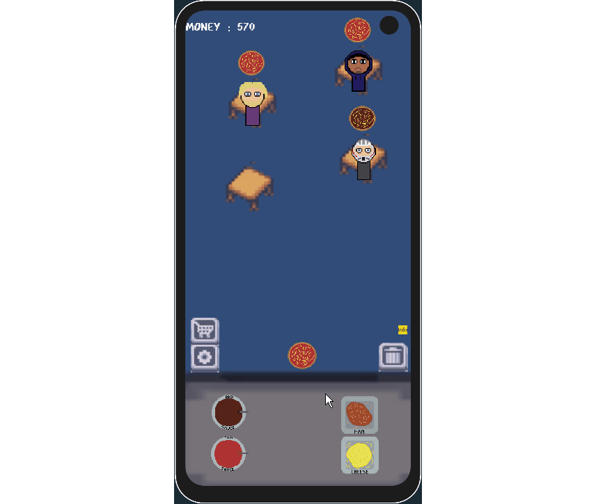

Top ’n’ Toss — Mobile Game Prototype
Role: Programmer
Team Size: 5 | Keywords: Unity (C#), Mobile, Google Play | Platform: Android
Overview
Top ’n’ Toss is a fast-paced, hybrid-casual mobile prototype developed to explore targeted research, iterative playtesting, and mobile-specific development workflows, including deployment via the Google Play Store.
Top ’n’ Toss is a fast-paced, hybrid-casual mobile prototype developed to explore targeted research, iterative playtesting, and mobile-specific development workflows, including deployment via the Google Play Store.
Players take control of a chaotic pizzeria, tapping quickly to assemble pizzas and flinging them to waiting customers using a slingshot mechanic. Each successful toss, bounce, or creative shot increases rewards, while efficient pizza crafting and timely delivery drive progression and upgrades.
View project on Github

My Contributions
- Designed and implemented the core gameplay loop, including pizza crafting, slingshot physics, and scoring systems.
- Conducted targeted playtesting sessions to evaluate user engagement and satisfaction
- Researched and implemented mobile optimisation practices, such as touch input handling, UI scaling, and performance tuning for Android.
- Deployed builds to the Google Play Store, gaining practical experience with app publishing workflows and mobile build requirements.
- Developed prototype upgrade systems for progression and monetisation simulation.
Tools & Technologies
Unity (C#), Android Build Pipeline, Google Play Console, Unity UI System, Physics Engine
Focus
This project focused on developing a research-driven prototype to explore mobile design principles, touch-based mechanics, and player engagement loops. It strengthened my understanding of playtesting methodologies, mobile deployment, and user-centric iteration in casual game development.
Image Gallery